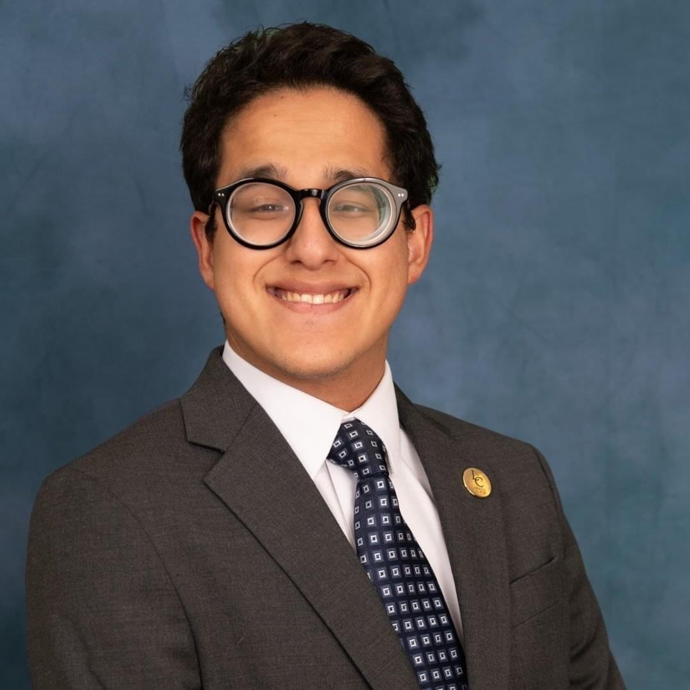

Cybersecurity student, IT professional, and lifelong learner.

I am a Cybersecurity student at Old Dominion University with a strong interest in IT operations, SOC analysis, and digital security systems. I am passionate about understanding how technology, security, and society intersect in modern environments, and I enjoy continuously developing both my technical and professional skills.
I began my academic journey at Laredo College, where I served as a Student Orientation Leader, Senator for the Laredo College Student Government Association (LCSGA), and Treasurer for the Texas Association of Chicanos in Higher Education (TACHE). These leadership experiences strengthened my communication, teamwork, adaptability, and time management skills while teaching me the importance of supporting and connecting with others in diverse environments.
At ODU, I expanded both my academic and professional experience through hands-on work in enterprise IT environments. With the support of my professors and mentors, I joined the ODU Division of Digital Transformation & Technology, where I gained practical experience providing IT support, troubleshooting technical issues, and working with enterprise systems that support the university community.
I continue developing my cybersecurity knowledge through the Chegg Skills Cybersecurity Program supported by Target and the TEEM Cybersecurity Mentorship Program. These opportunities have strengthened my understanding of cybersecurity operations while giving me career guidance and industry insight from experienced IT professionals.
Originally from Texas near the U.S.–Mexico border, I grew up in a strong Latino community that shaped my identity, values, and perspective. My family taught me the importance of humility, kindness, discipline, and hard work.
Being involved in organizations such as ODU WEPA has allowed me to stay connected to my roots through music, dance, and shared experiences while strengthening my confidence and leadership skills.
I am pursuing a career in cybersecurity while building a foundation in IT support, security operations, and enterprise technology. I am motivated by continuous learning, professional growth, and the opportunity to contribute to secure and reliable systems that positively impact organizations and communities.
Old Dominion University
B.S. in Cybersecurity (IT Concentration)
Expected Graduation: Spring 2027